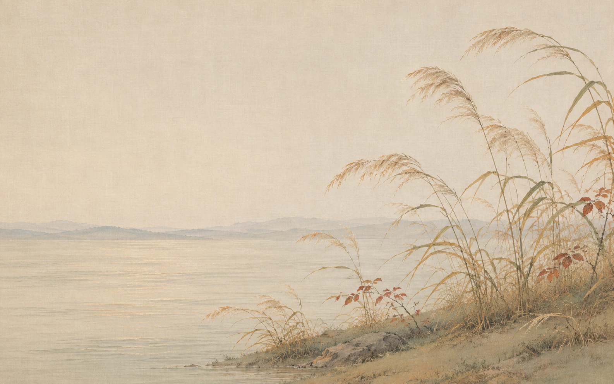

屏幕闲下来，
诗意便有了位置
习惯用屏保，就让诗画在闲置时出现。
更习惯直接息屏，也可以选择在解锁后看一眼，约 3 秒便收起。两种方式，只选一种。
空山新雨后，天气晚来秋。 明月松间照，清泉石上流。 竹喧归浣女，莲动下渔舟。 随意春芳歇，王孙自可留。 王维《山居秋暝》
毕竟西湖六月中， 风光不与四时同。 接天莲叶无穷碧， 映日荷花别样红。 杨万里《晓出净慈寺送林子方》
习惯用屏保，就让诗画在闲置时出现。
更习惯直接息屏，也可以选择在解锁后看一眼，约 3 秒便收起。两种方式，只选一种。
空山新雨后，天气晚来秋。 明月松间照，清泉石上流。 竹喧归浣女，莲动下渔舟。 随意春芳歇，王孙自可留。 王维《山居秋暝》
按作者、篇名或原文查找作品，阅读正文、诸家评语和注释。也可以从篇中的语与意找到相关作品，或全屏预览当前这一篇。

雨打梨花深闭门， 孤负青春，虚负青春。 赏心乐事共谁论？ 花下销魂，月下销魂。 愁聚眉峰尽日颦， 千点啼痕，万点啼痕。 晓看天色暮看云， 行也思君，坐也思君。 唐寅《一剪梅·雨打梨花深闭门》

塞下秋来风景异，衡阳雁去无留意。 四面边声连角起。 千嶂里，长烟落日孤城闭。 浊酒一杯家万里，燕然未勒归无计。 羌管悠悠霜满地。 人不寐，将军白发征夫泪。 范仲淹《渔家傲·秋思》

秋风起兮白云飞， 草木黄落兮雁南归。 兰有秀兮菊有芳， 携佳人兮不能忘。 泛楼船兮济汾河， 横中流兮扬素波。 箫鼓鸣兮发棹歌， 欢乐极兮哀情多。 少壮几时兮奈老何！ 刘彻《秋风辞》
先选一种适合自己的相遇方式，再完成对应设置。两种自动展示方式互斥；只想读诗，也可以全部关闭。
| 方式 | 什么时候显示 | 需要 App 运行吗 |
|---|---|---|
| 屏保 | 电脑闲置时，由 macOS 启动 | 不需要 |
| 解锁后一瞥 | 离开达到所选时长，解锁后约 3 秒 | 需要，可关闭阅读窗口 |
| 不自动显示 | 只在主动阅读或手动预览时显示 | 使用时打开即可 |
免费，适用于 macOS 14 及以上。Apple Silicon 与 Intel 通用安装包。以下两种安装方式任选一种。
当前为 1.1.0 公开测试版，采用临时签名，尚未完成 Apple 公证。安装包和 Homebrew 使用同一版本；Homebrew 不会绕过 macOS 的安全检查。
首次引导可以跳过，先读诗词。之后打开“一瞥 → 设置”（⌘,），左侧有“展示方式”“阅读与配景”“安装与帮助”三栏。
只想主动阅读：选择“不自动显示”，仍可随时阅读和手动预览。如果 macOS 仍选着“一瞥诗词”，系统屏保还会独立运行，须到系统设置改用其他屏保；App 内的单选项不能替代这一步。不再需要后台运行时，也可关闭登录后自动运行。
入口取决于 macOS 版本，而不是简单按 Intel 或 Apple Silicon 区分：
macOS 14／15：系统设置 → 屏幕保护程序。macOS 26 及以后：系统设置 → 墙纸 → 屏幕保护程序。找不到时，在系统设置中搜索“屏幕保护程序”。屏保启动与显示器关闭的时间在“锁屏”中调整；密码和息屏要求始终由你和 macOS 决定。
解锁模式仅在主显示器呈现已选精华和配画，画面上不加操作提示或倒计时。不操作，约 3 秒自动收起；这三秒内不换诗。鼠标移动不会提前关闭，也不会延长停留。
点击诗句、篇名或作者，在 App 中阅读全文。点击其他区域、按键或滚动，立即收起诗笺；关闭的那次背景点击不会继续点到底下的窗口。再次锁屏、休眠或离开会话时也会收起，不回来补播。
普通打开一瞥，可回看最近实际绘出的作品。解锁诗笺直接在 App 内保存记录；回看系统屏保作品，需要在“阅读与配景”中点击“设置屏保数据访问”，阅读用途说明后决定是否申请系统权限。
屏保回看与解锁回看使用不同的记录位置。暂不允许屏保数据访问，仍可阅读内置内容、手动预览和回看解锁作品。自动出现诗笺本身不会切换已经打开的阅读页；你主动打开某一篇时，也不会被回看覆盖。
诗词正文和核心配景随版本提供，可离线使用。“阅读与配景”中的“下载扩展配景与配景更新”默认关闭；主动开启后，App 运行时每天检查更新，也可点击“立即检查”。共享配景需要屏保数据访问；屏保本身只读本地图片，不自行联网下载。
关闭下载会保留已有图片。引号样式也在这一栏调整，可跟随语言或使用方引号。所有模式下，都可以在“展示方式”手动预览诗笺；手动预览与解锁后的三秒展示是不同入口。
下载安装新版替换主 App。使用 Homebrew 时，先运行 brew update 更新 Tap，再执行下面的升级命令。同渠道升级保留已有偏好，不会因为更新就擅自开启解锁展示或扩展下载。
brew upgrade --cask activationenergy/tap/glimpse如果安装过一瞥屏保，升级主 App 后还须到“安装与帮助”点击“安装／更新屏保”，完成后检查版本并试一次系统预览。Homebrew 不会更新那个单独安装的屏保。
旧内测版和公开测试版使用不同应用标识，原偏好与屏保记录不会自动迁移。请避免同时运行旧内测版和新版。
卸载前，先关闭“登录后自动运行一瞥”，到系统设置改用其他屏保，再退出并移除 App 和“一瞥诗词”屏保。不要删除整个系统屏保数据容器，以免影响其他屏保；仅删除 App 不会卸载独立屏保。
系统可能仍选着一瞥屏保，或者 App 暂时无法确认系统选项。先到系统设置改用其他屏保，返回后点击“重新检查”。只有“已就绪”才表示解锁模式可以工作。未知或无法读取的系统配置会保持暂停；不要通过关闭系统安全保护来强行启用，可先用系统屏保或手动预览，并反馈本机 macOS 版本。
先确认一瞥仍在运行，而且在锁屏前已经打开；离开时长需要达到所选的 2、5、10、30 分钟或 1 小时。刚启动、开机登录、仅亮屏和普通激活不会展示。每次解锁最多出现一次，内容没有及时准备好时会跳过；本次离开已经展示过一瞥屏保，也不追加。
确认系统选中的是“一瞥诗词”，且屏保启动早于显示器关闭。显示器先关闭，就可能看不到屏保。先使用系统预览，再等待一次闲置启动；如果平时习惯直接息屏，可以改用解锁模式，无需为了看诗延长亮屏时间。
屏保模式不需要 App 保持运行。解锁模式需要一瞥在后台运行，但可以关闭阅读窗口；退出 App 后暂停。登录后自动运行是独立可选项，受 macOS 实际批准状态控制。
检查“阅读与配景”中的屏保数据访问，再点击“检查屏保回看记录”。须让系统屏保实际显示一次；小预览和 App 手动预览不写入屏保回看记录。无记录、权限被拒绝或本版本不含对应作品时，可继续从诗卷查找。解锁作品回看不需要屏保数据访问。
内置诗词和配景可以离线使用，不需要账号。只有主动开启扩展下载后，App 才会检查新配景与更新；关闭后保留已下载图片。
本版已完成 arm64／x86_64 通用构建、自动回归和本机窗口检查，尚未完成 Developer ID 签名、Apple 公证、完整 Gatekeeper 验证，以及 Intel 和最低 macOS 14 真机验收。真实登录后启动与锁屏认证的系统事件时序仍需继续验证；构建通过不等于这些实机路径已全部通过。